Economía Internacional — Clase 4
Rendimientos crecientes, competencia imperfecta y Nueva Geografía Económica
16 de abril de 2026
UMET - Licenciatura en Economía | 2026
¿Qué vamos a ver hoy?
- Bloque 1 — Motivación: ¿qué no explica H-O? La tríada, Krugman y la competencia monopolística
- Bloque 2 — El modelo: rendimientos crecientes, comercio intraindustrial, mecanismo Krugman, ganancias
- Bloque 3 — Medición: índice Grubel-Lloyd, IIT horizontal vs vertical, evidencia comparada, caso Mercosur
- Bloque 4 — Implicancias: ganadores/perdedores, home-market effect, centro-periferia, política
- Bloque 5 — Nueva Geografía Económica: fuerzas centrípetas/centrífugas, modelo K-1991, evidencia, Argentina
- Cierre: resumen, material complementario, lecturas, próxima clase
¿Qué no explica bien Heckscher-Ohlin?
- Hasta acá vimos comercio interindustrial: cada país exporta bienes de un sector e importa bienes de otro (trigo por autos, cobre por maquinaria) — esto explican Ricardo y H-O
- Pero gran parte del comercio mundial es entre países parecidos (no solo Norte-Sur)
- Y mucho comercio es de ida y vuelta dentro del mismo sector: autos por autos, químicos por químicos
- Con rendimientos crecientes aparecen: escala, variedad y poder de mercado
- Los modelos clásicos asumen rendimientos constantes y competencia perfecta → no capturan esto
- Pregunta guía: ¿por qué comerciar si somos similares?
La tríada: EEUU, UE y Japón dominan el comercio mundial
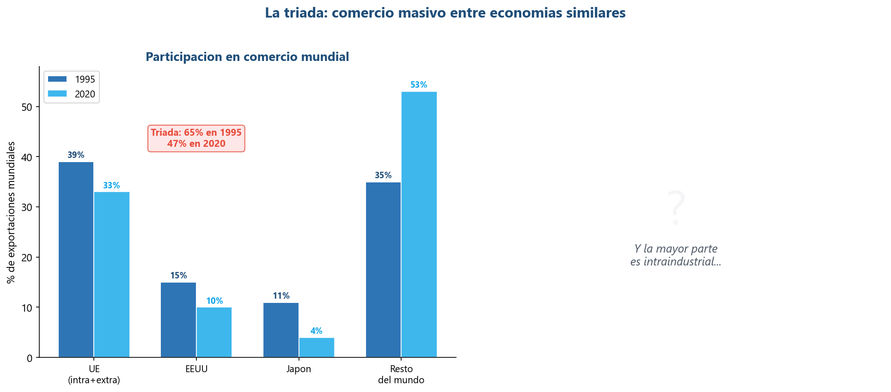
- En los años 90, la tríada (EEUU + UE + Japón) concentraba ~65% de las exportaciones mundiales
- La mayor parte del comercio de la tríada era entre ellos mismos (intra-tríada)
- Hoy, con el ascenso de China, la tríada perdió peso (~50%)
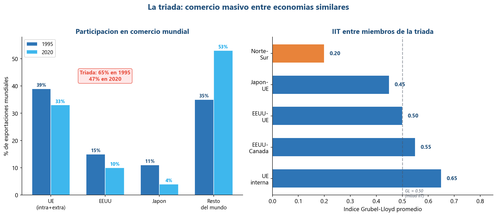
- Y era mayormente intraindustrial: IIT > 60% en manufacturas
- Tres economías con dotaciones similares comerciando masivamente entre sí
- H-O predice comercio Norte-Sur → la tríada es la anomalía
Paso 1 / 2
Edward Chamberlin (1899-1967)
Fuente: Wikimedia Commons, CC BY-SA 4.0
- Economista estadounidense, Harvard toda su carrera (1937-1967)
- Publicó The Theory of Monopolistic Competition (1933) — su obra fundamental
- Idea central: los mercados reales no son ni competencia perfecta ni monopolio — son algo intermedio
- Muchas firmas, pero cada una produce una variedad diferenciada (marca, diseño, ubicación)
- Cada firma tiene algo de poder de mercado (puede subir el precio sin perder todos los clientes)
- Pero hay libre entrada: si hay ganancias, entran competidores → ganancias tienden a cero
- Coincidencia histórica: el mismo año, Joan Robinson (Cambridge, UK) publicó The Economics of Imperfect Competition — conclusiones parecidas, de forma independiente
Dixit y Stiglitz: la herramienta matemática que faltaba
- Avinash Dixit (1944-, indio-estadounidense, Princeton) y Joseph Stiglitz (1943-, Nobel 2001)
- Problema de los 70s: los economistas sabían que los consumidores valoran la variedad, pero no podían modelarlo formalmente
- Dixit y Stiglitz (1977) crearon la función de utilidad CES (elasticidad de sustitución constante):
- \(U = \left(\sum_{i=1}^{n} c_i^\rho\right)^{1/\rho}\) donde \(0 < \rho < 1\)
- "Amor por la variedad": prefiero consumir un poco de muchas variedades que mucho de una sola
- El parámetro \(\rho\) controla cuánto valoro la variedad: cuanto más bajo, más valoro tener opciones distintas
- La elasticidad de sustitución es \(\sigma = \frac{1}{1-\rho}\) — mide cuán sustituibles son las variedades entre sí
- Resultado clave: en equilibrio, el número de variedades \(n\) depende del tamaño del mercado — mercado más grande → más variedades
- Se convirtió en el modelo de referencia ("workhorse model") de toda la economía de competencia imperfecta
Paul Krugman (1953-)
Fuente: Foto oficial Casa Blanca (dominio público)
- Economista estadounidense, Nobel de Economía 2008
- Premio por su análisis de patrones de comercio y localización de actividad económica
- En los años 1979-1980 formalizó la Nueva Teoría del Comercio: comercio por escala y diferenciación, no solo por dotaciones
- Discute con Ricardo/H-O: mostró que puede haber comercio entre países idénticos
- Observaba el auge del comercio intraindustrial entre economías desarrolladas similares (UE, EEUU-Canadá)
- También desarrolló la Nueva Geografía Económica (centro-periferia, 1991)
- Columnista influyente del New York Times; polemista activo en debates de política comercial
El salto de Krugman: Dixit-Stiglitz + dos países = Nueva Teoría del Comercio
- En 1979, Krugman tomó el modelo Dixit-Stiglitz y le agregó dos países con comercio
- El marco ya estaba armado: competencia monopolística + amor por la variedad + costos fijos + libre entrada
- La pregunta de Krugman: ¿qué pasa cuando dos economías con esta estructura se abren al comercio?
- Resultado: mercado más grande → más variedades posibles + menor costo por variedad → los consumidores ganan
- Esto genera comercio entre países idénticos — sin necesidad de diferencias en dotaciones ni tecnología
- La clave: el comercio no viene de "ser distintos" sino de que el mercado se agranda con la apertura
- Krugman cita a Dixit-Stiglitz como la base técnica de toda su teoría
El modelo de Krugman
Rendimientos crecientes, diferenciación y comercio intraindustrial
Rendimientos crecientes = costos medios que caen con la escala
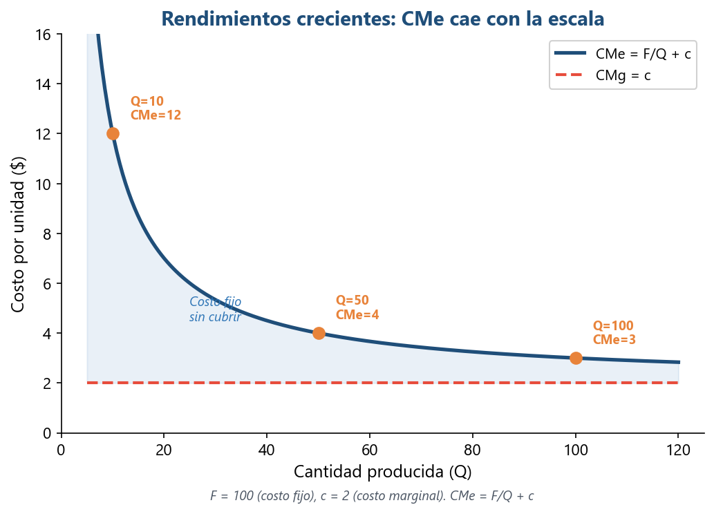
Fuente: Elaboración propia
- Idea central: al producir más, el costo medio (CMe) baja porque los costos fijos se "diluyen"
- Costos fijos típicos: planta, I+D, diseño, marketing, homologaciones
- Forma simple: \(CMe = F/Q + c\) (F = costo fijo, Q = cantidad, c = costo marginal)
- Implicación: si \(P = CMg\), la firma no cubre \(F\) → aparecen mark-ups y pocas firmas
- Rendimientos crecientes rompen la competencia perfecta
Dos tipos de economías de escala
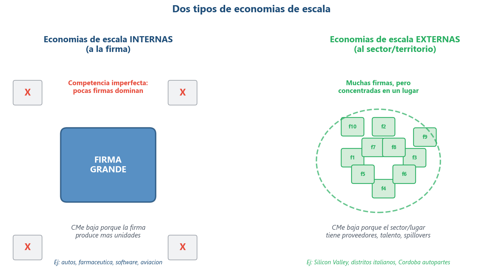
Fuente: Elaboración propia basada en Krugman, Obstfeld & Melitz cap. 7
- Internas (a la firma): CMe baja porque mi empresa produce más → planta grande, automatización, I+D diluido
- Externas (al sector/territorio): CMe baja porque el sector/lugar es grande → proveedores, talento, spillovers
- Internas → competencia imperfecta (pocas firmas con ventaja de costos)
- Externas → puede haber muchas firmas pero concentración geográfica (clústeres)
- Internas: autos (plataformas), farmacéutica, software
- Externas: Silicon Valley, distritos industriales italianos, polo autopartista Córdoba
Con rendimientos crecientes puede haber comercio sin ventaja comparativa tradicional
- Si hay costos fijos y economías de escala, conviene concentrar producción en pocas plantas para bajar CMe
- Con comercio, una planta abastece dos mercados → produce más → baja costos → más competitiva
- Aun con países similares, aparece especialización: "yo produzco esta variedad, vos aquella"
- Puede haber múltiples equilibrios: pequeñas diferencias iniciales "inclinan" dónde se concentra la producción
- Esto es path dependence: la historia importa
El hecho estilizado: comercio "ida y vuelta" en el mismo sector
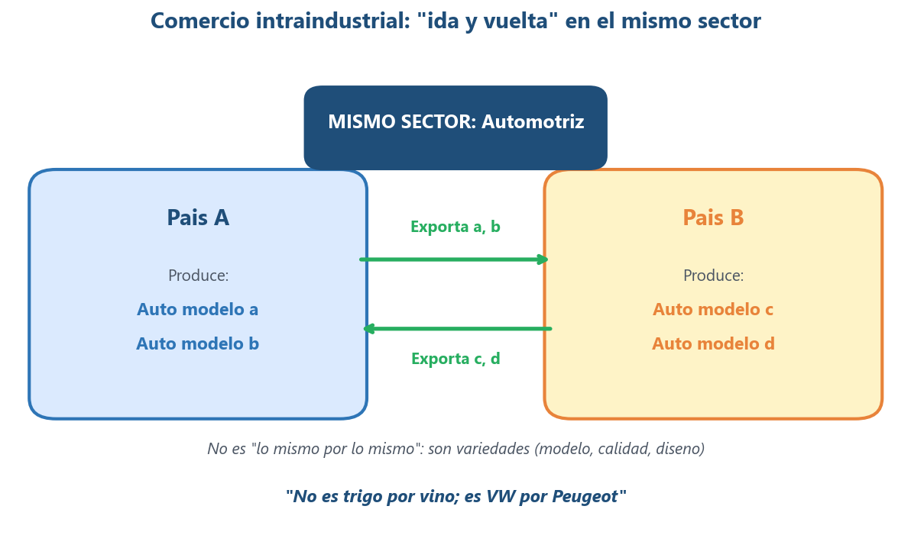
Fuente: Elaboración propia
- Recordemos: el comercio interindustrial es trigo por autos (distintos sectores, Ricardo/H-O)
- Ahora el otro tipo: comercio intraindustrial — los países exportan e importan dentro del mismo sector
- No es "lo mismo por lo mismo": son variedades (modelo, calidad, diseño, marca) y componentes
- Con diferenciación + costos fijos, cada firma produce una variedad y necesita mercado grande
- El comercio permite: más variedades disponibles y menores costos por escala
- Ejemplo: no es trigo por vino; es VW por Peugeot
¿Por qué el comercio "ida y vuelta" es lógico?
- Preferencia por variedad: consumidores y empresas valoran elegir entre distintos productos
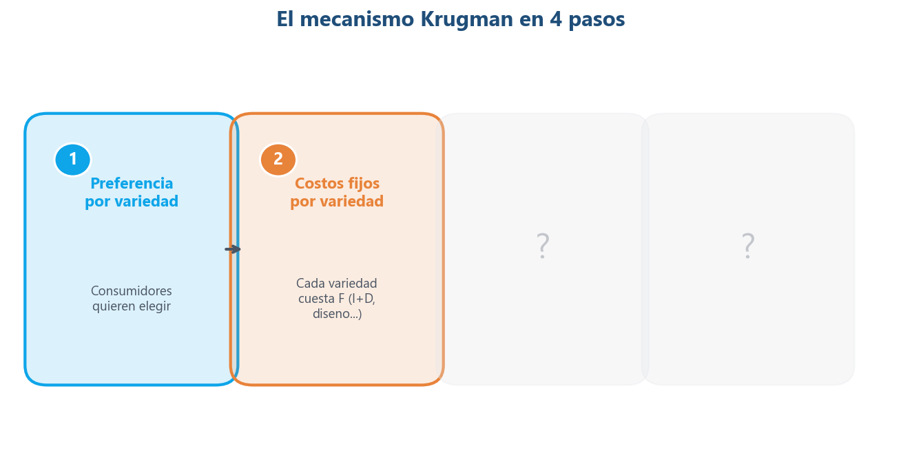
- Costos fijos: cada variedad requiere F (diseño, I+D, marketing, adaptación)
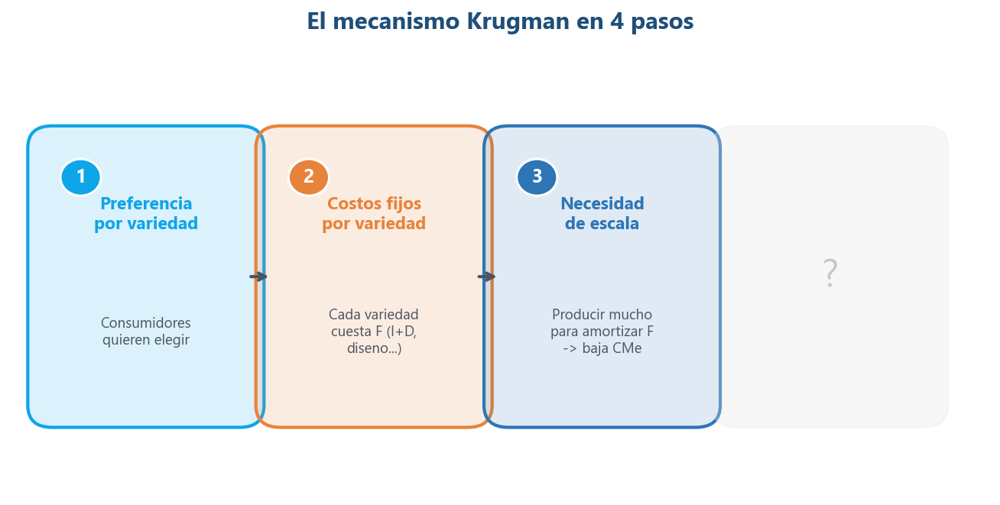
- Escala: para amortizar F, cada firma necesita vender mucho → una variedad a gran escala
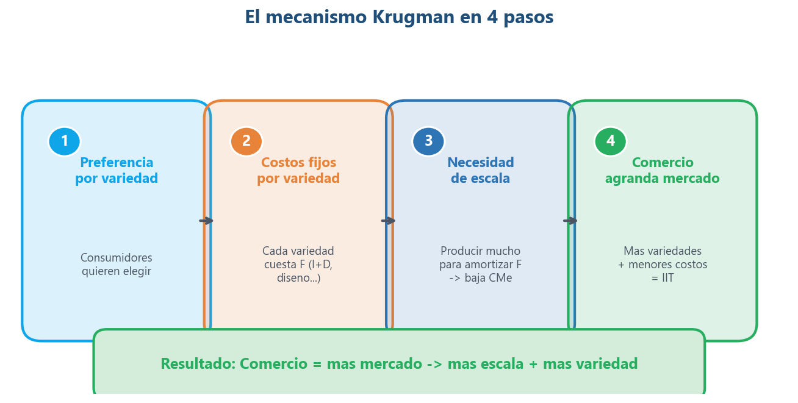
- Comercio: el mercado se agranda → más variedades + baja CMe → IIT
- Comercio = más mercado → más escala + más variedad
Paso 1 / 4
¿Qué ganamos con abrir el comercio en este modelo?
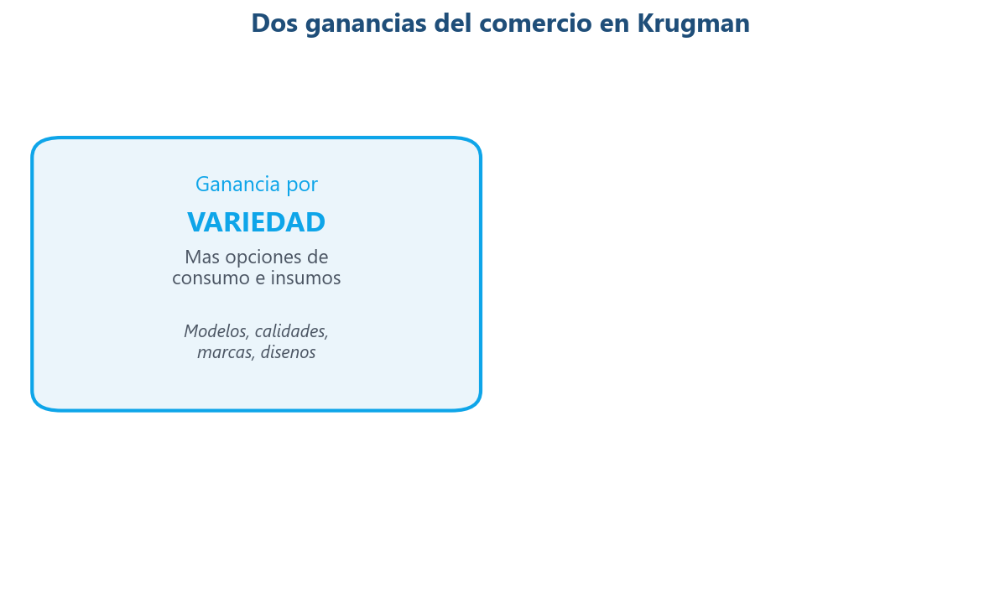
- Ganancia por variedad: más opciones de consumo e insumos (modelos, calidades, marcas)
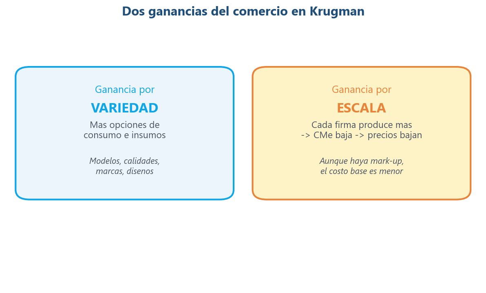
- Ganancia por escala: cada firma produce más → baja CMe → precios más bajos (aunque haya mark-up)
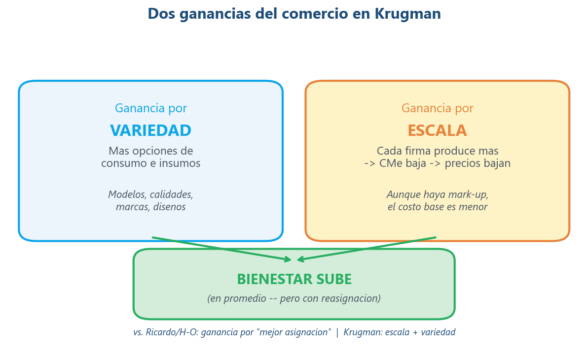
- Efecto combinado: variedad sube + costos bajan → bienestar sube (en promedio)
- Contraste con Ricardo/H-O: allá "mejor asignación"; acá escala + variedad
- Pero: hay reasignación entre firmas y regiones
Paso 1 / 3
¿Qué explica cada teoría del comercio?
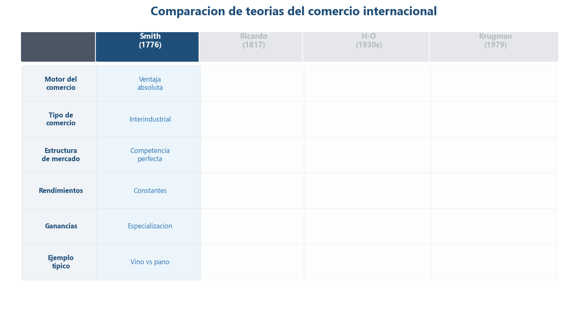
- Smith: ventajas absolutas, diferencias de productividad, comercio interindustrial
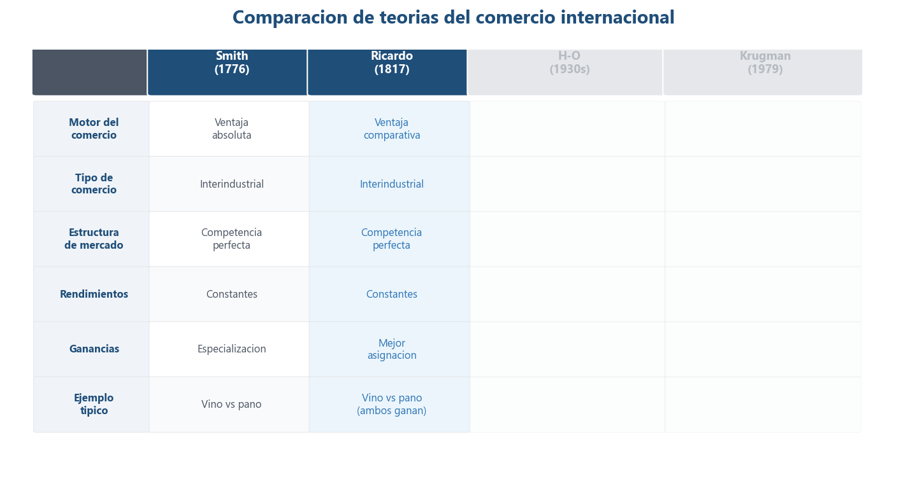
- Ricardo: ventajas comparativas, costos de oportunidad, ganancias para todos
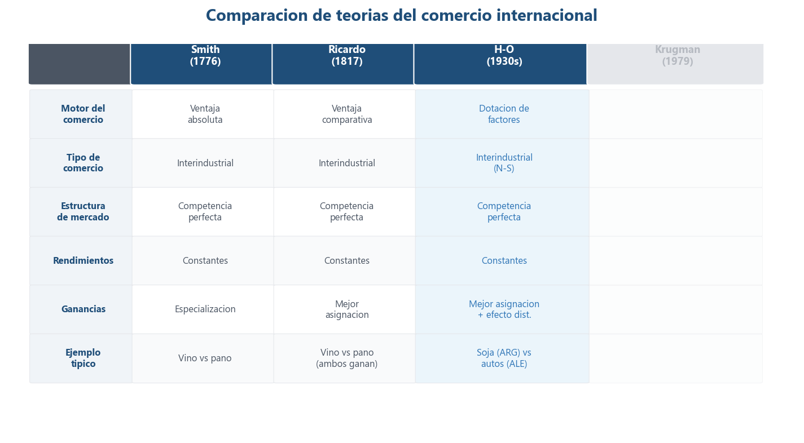
- H-O: dotaciones de factores, comercio Norte-Sur, efectos distributivos (S-S)
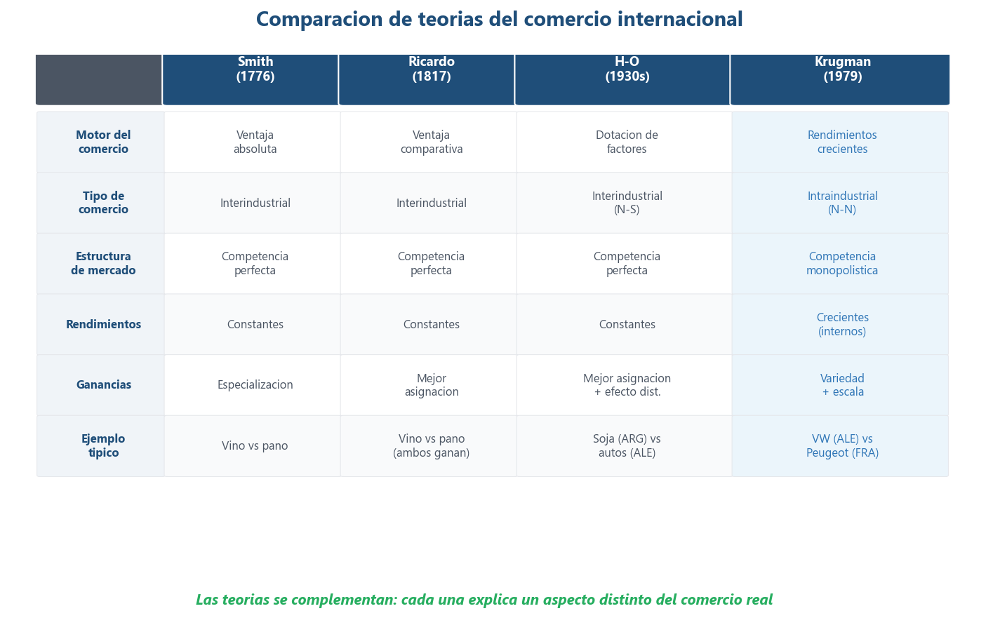
- Krugman: rendimientos crecientes, competencia monopolística, IIT entre similares
- Las teorías no se reemplazan, se complementan
Paso 1 / 4
Medir el comercio intraindustrial
Grubel-Lloyd, evidencia comparada y el caso argentino
La sorpresa que motivó el índice
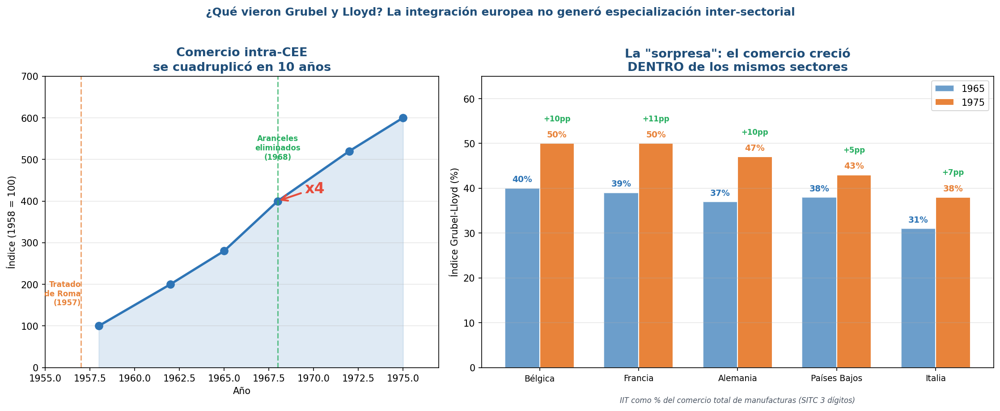
Fuente: Datos: RBA (1991) a partir de Grubel & Lloyd (1975)
- 1957: se firma el Tratado de Roma → nace la CEE (hoy UE). Se eliminan aranceles entre los 6 miembros
- Los economistas esperaban especialización inter-sectorial (como predecía H-O): Francia en vino, Alemania en autos...
- Pero pasó lo contrario: el comercio creció dentro de los mismos sectores — Francia y Alemania seguían haciendo ambas cosas, pero intercambiándolas
- Herbert Grubel (canadiense) y Peter Lloyd (australiano) documentaron esto en su libro de 1975
- Crearon un índice simple para medir cuánto comercio es "ida y vuelta" dentro del mismo sector
- Cuatro años después, Krugman (1979) les dio la explicación teórica: economías de escala + diferenciación
¿Cómo medimos el comercio intraindustrial?
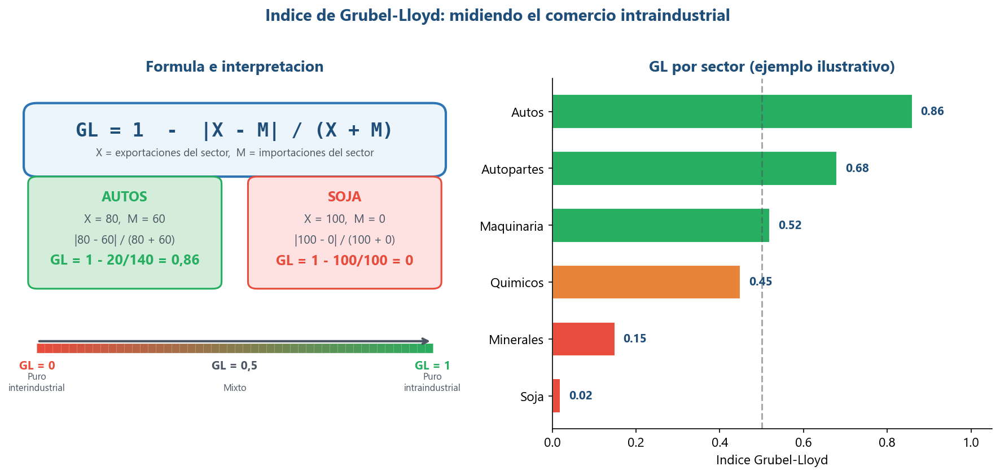
Fuente: Grubel & Lloyd (1975), Elaboración propia
- Fórmula: \(GL_i = 1 - \frac{|X_i - M_i|}{X_i + M_i}\)
- Mide el solapamiento entre exportaciones e importaciones en un sector \(i\)
- \(GL = 0\): comercio puro interindustrial (solo exporta o solo importa en ese sector)
- \(GL = 1\): comercio puro intraindustrial (exporta e importa por igual)
- Ejemplo autos: si \(X = 80\) y \(M = 60\) → \(GL = 1 - |20|/140 = 0{,}86\) (alto IIT)
- Ejemplo soja: si \(X = 100\) y \(M = 0\) → \(GL = 1 - 100/100 = 0\) (puro interindustrial)
- Se puede calcular para un sector, un socio comercial o el comercio total (promedio ponderado)
No todo el comercio intraindustrial es igual
- IIT horizontal: intercambio de variedades de calidad similar pero atributos diferentes
- Ejemplo: VW Golf por Peugeot 308, Coca-Cola por Pepsi, galletitas Arcor por Nestlé
- Motivado por preferencia por variedad (Krugman puro) — entre países similares
- IIT vertical: intercambio de variedades de distinta calidad dentro del mismo sector
- Ejemplo: BMW (gama alta) por Dacia (gama baja), vino fino por vino de mesa
- Motivado por diferencias de ingreso y tecnología — puede darse entre países distintos
- Método: si el ratio de valores unitarios (precio export / precio import) está entre 0,85 y 1,15 → horizontal; fuera de ese rango → vertical
- En la práctica, el IIT de la UE es mayormente horizontal; el IIT Norte-Sur es más vertical
El índice Grubel-Lloyd varía mucho según los socios comerciales
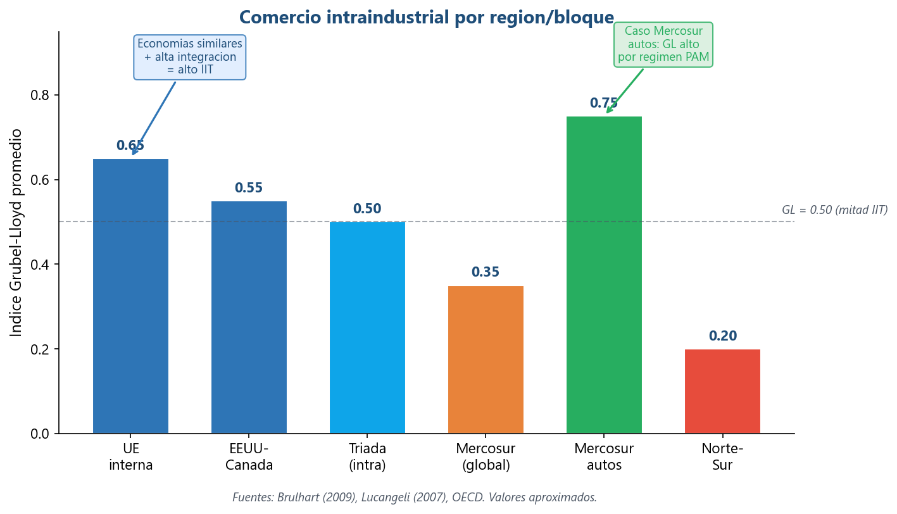
Fuente: Elaboración propia con datos de Brülhart (2009), Lucángeli (2007) y OECD
- UE intra-bloque: GL ~ 0,65 → alto IIT, economías similares, mercado integrado
- EEUU-Canadá: GL ~ 0,55 → alto IIT, vecinos integrados (NAFTA/USMCA)
- Mercosur (global): GL ~ 0,35 → moderado, pero autos GL ~ 0,75 (caso destacado)
- Norte-Sur: GL ~ 0,20 → bajo IIT, dominan las diferencias de dotaciones (más interindustrial)
- Patrón claro: el IIT crece con la similitud económica, la cercanía y la integración
- La tríada (EEUU/UE/Japón) tenía los GL más altos del mundo en los 90
Argentina-Brasil: el comercio automotriz como caso paradigmático
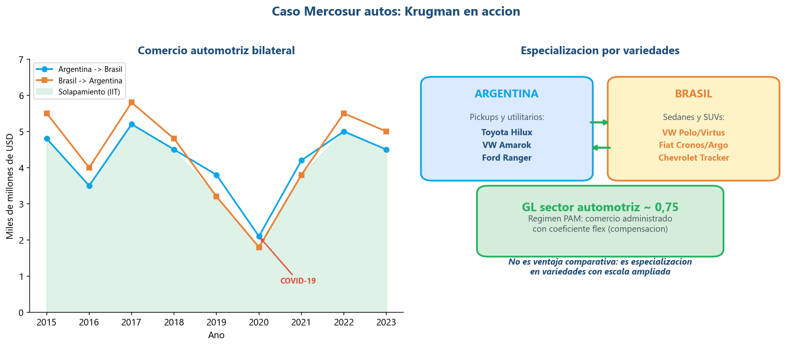
Fuente: Elaboración propia con datos INDEC y ADEFA
- Argentina y Brasil intercambian vehículos y autopartes bajo el régimen PAM (Política Automotriz del Mercosur)
- No es que uno sea "mejor" que el otro en autos: cada uno se especializa en variedades
- Argentina: pickups (Hilux, Amarok, Ranger), utilitarios
- Brasil: sedanes populares, compactos, SUVs
- Comercio bilateral automotriz: ~US$ 8-12 mil millones anuales, con GL ~ 0,75
- El PAM usa un coeficiente flex (compensación): por cada dólar importado hay que exportar una proporción
- Es el ejemplo perfecto del modelo Krugman: costos fijos altos (planta, I+D, homologación) + diferenciación + escala ampliada por integración regional
¿Dónde queda Argentina en este nuevo mapa?

Fuente: Elaboración propia a partir de WITS/Banco Mundial (circa 2019)
- Con el mundo: el comercio argentino es mayoritariamente interindustrial — exporta primarios (RCA 4-8), importa manufacturas (RCA < 1)
- Con Brasil: aparece IIT significativo, pero concentrado en autos (GL ~0,75) y algo en químicos y alimentos procesados
- El IIT automotriz no es espontáneo: es resultado del régimen PAM (política + integración regional)
- Fuera de autos, el GL Argentina-Brasil es bajo (~0,35) — vuelve al patrón interindustrial
- Pregunta: ¿Argentina puede ampliar su comercio intraindustrial o está estructuralmente limitada al patrón primario-exportador?
Implicancias
Ganadores, perdedores y el tamaño del mercado
Ganancias agregadas, ajustes reales: firmas, empleo y territorio
- En promedio: variedad sube + costos bajan → bienestar sube
- Pero hay reasignación entre firmas: las más productivas/innovadoras crecen; otras pierden mercado o salen
- Efectos laborales: cambian puestos y tareas dentro del sector (cierres y expansiones, reconversión)
- Países/mercados chicos: si no logran "mercado efectivo" (acceso externo), pueden quedar como importadores netos en sectores de alta escala
- A diferencia de H-O (redistribución entre factores), acá la redistribución es entre firmas y entre territorios
- Frase clave: "No muere el sector; cambian las firmas que lo integran"
¿Por qué el tamaño del mercado importa tanto?
- Home-market effect (Krugman 1980): con rendimientos crecientes, el país con mayor demanda doméstica de un bien tiende a ser exportador neto de ese bien
- Intuición: las firmas se instalan cerca del mercado grande para ahorrar costos de transporte → producen más de lo que consume ese mercado → exportan el excedente
- Esto es lo opuesto a H-O: en H-O, el país con mucha demanda importa; en Krugman, el que tiene más demanda produce más y exporta
- Mercado efectivo = mercado doméstico + acceso real a mercados externos
- Para países chicos, hay 3 vías para ampliar el mercado efectivo:
- (1) Integración regional (Mercosur, UE) → mercado ampliado
- (2) Acuerdos comerciales → acceso preferencial a mercados grandes
- (3) Especialización en nichos → calidad/diseño para exportar al mundo
¿Por qué la producción se concentra en "polos"?
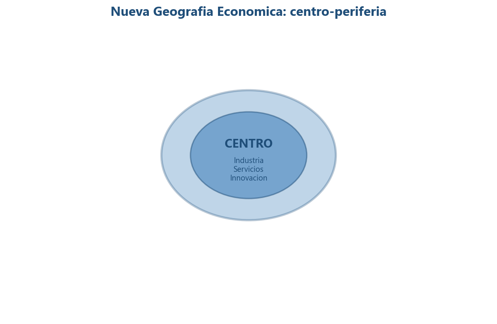
- El centro concentra industria, servicios e innovación
- Con economías de escala + costos de transporte → la producción tiende a agruparse
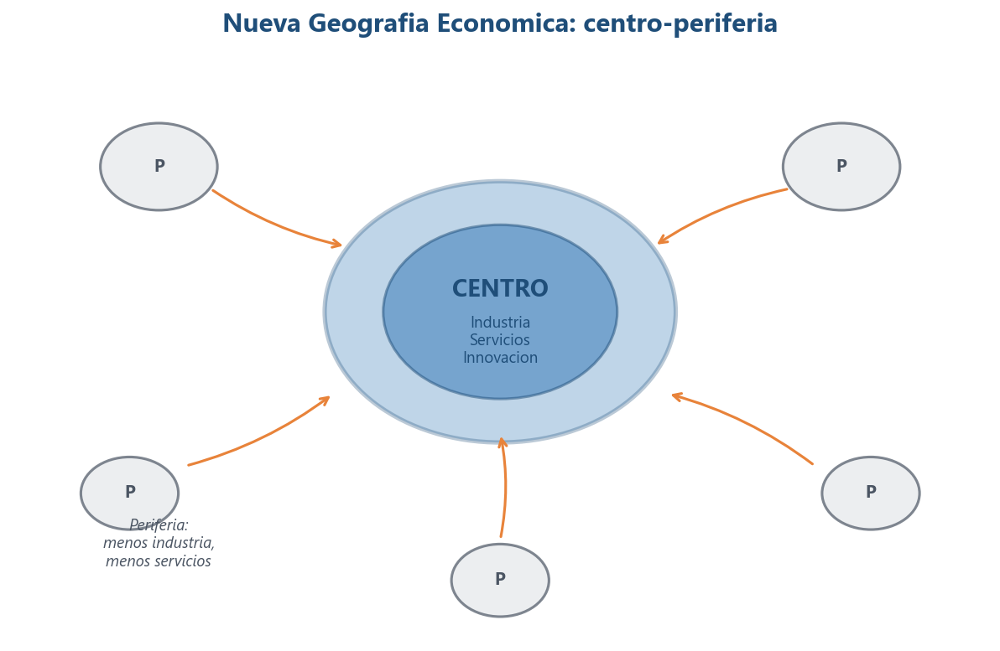
- La periferia queda con menos industria y servicios
- Resultado: estructura centro-periferia (polos industriales vs regiones rezagadas)
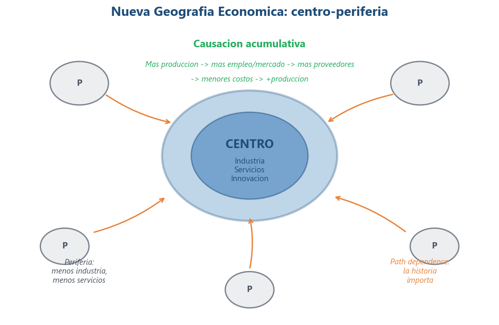
- Causación acumulativa: más producción → más empleo/mercado → más proveedores → menores costos → +producción
- Path dependence: shocks iniciales pueden "encender" un polo
- Ejemplo: AMBA, Córdoba automotriz, núcleo industrial UE
Paso 1 / 3
Política económica con escala y concentración: oportunidades y riesgos
- Si la producción se concentra, la política clave es agrandar el mercado efectivo: integración regional, acceso a mercados, reglas estables
- Reducir costos de comercio: logística, infraestructura, aduanas, estándares, conectividad
- Construir capacidades para competir en variedades: calidad, diseño, I+D, proveedores, habilidades
- Cuidado: el margen para "elegir ganadores" existe, pero hay riesgo de captura y protección permanente
- No es "proteccionismo sí/no": es qué política, con qué objetivo, por cuánto tiempo
Qué explica bien este enfoque (y qué no)
- Explica mejor cuando hay: productos diferenciados, costos fijos, economías de escala, comercio intraindustrial
- Muy útil para: comercio entre países similares, concentración territorial (centro-periferia), la tríada
- Deja más afuera: comercio de commodities y sectores donde mandan las dotaciones (ahí H-O/Ricardo siguen siendo centrales)
- Los enfoques se complementan: en la práctica, casi siempre conviven ambas fuerzas
- Hoy agregamos una caja de herramientas nueva: antes el comercio era "diferencias"; ahora también es "escala y variedad"
Nueva Geografía Económica
¿Por qué la producción se concentra en ciertos lugares?
¿Qué fuerzas empujan la concentración y qué la frena?
- Fuerzas centrípetas (hacia la concentración):
- Tamaño de mercado (forward linkage)
- Proveedores especializados (backward linkage)
- Pool de trabajadores calificados
- Derrames de conocimiento (spillovers)
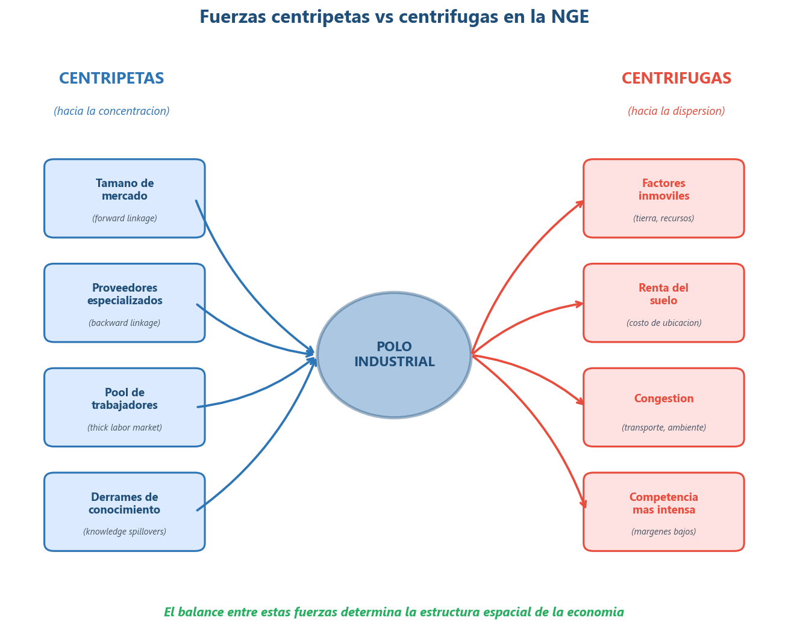
- Fuerzas centrífugas (hacia la dispersión):
- Factores inmóviles (tierra, recursos)
- Renta del suelo (costo de ubicación)
- Congestión (transporte, ambiente)
- Competencia más intensa (márgenes bajos)
Paso 1 / 2
El modelo formal: cómo emerge la estructura centro-periferia
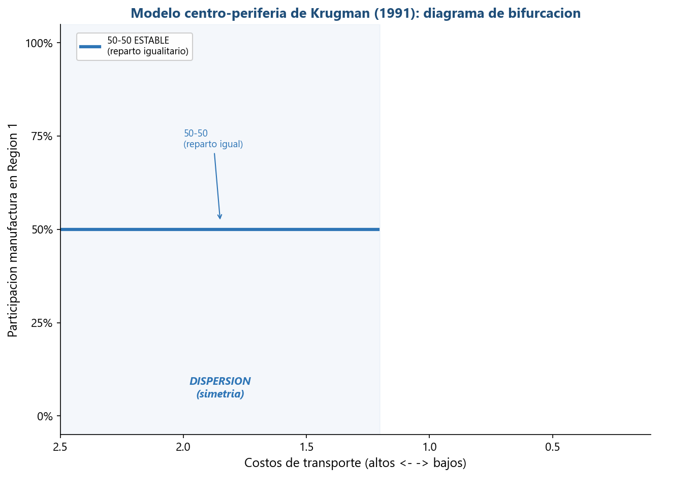
- Setup: 2 regiones, 2 sectores (agricultura + manufactura)
- Costos de transporte altos (\(\tau\) alto): la manufactura se dispersa 50-50
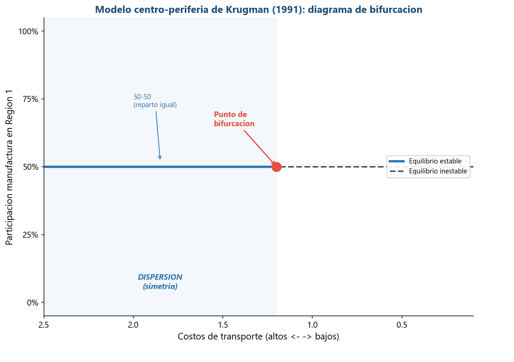
- Punto de bifurcación: al bajar \(\tau\), el equilibrio simétrico se vuelve inestable
- Pequeños shocks pueden "inclinar" todo hacia un lado
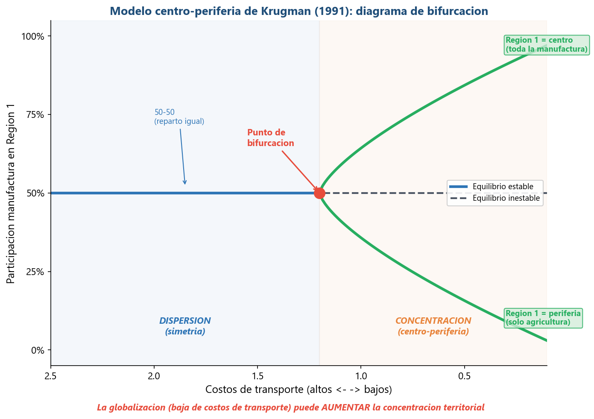
- Costos de transporte bajos: la manufactura se concentra → centro-periferia
- Equilibrios múltiples: historia, accidentes y políticas determinan quién es centro
- La globalización (baja de \(\tau\)) puede aumentar la concentración
Paso 1 / 3
La concentración territorial en el mundo real
- Unión Europea: la "banana azul" (corredor Londres-Milán) concentra la industria y los servicios avanzados del continente
- Estados Unidos: el manufacturing belt (Grandes Lagos) → se convirtió en rust belt → producción migró al sun belt — pero la concentración persiste en nuevos polos (Silicon Valley, corredor I-95)
- China: la industria exportadora se concentró en la costa: delta del Río Perla (Shenzhen, Guangzhou), delta del Yangtze (Shanghai) — ~60% del PIB industrial en ~15% del territorio
- México: la frontera norte se industrializó por proximidad a EEUU (maquiladoras → NAFTA → T-MEC) — polo de autopartes y electrónica
- Mundo "espinoso" (Richard Florida): la mayor parte de la innovación y producción avanzada ocurre en unas pocas aglomeraciones urbanas globales
- Patrón general: la concentración tiende a reforzarse una vez que arranca (path dependence en acción)
Argentina: un caso extremo de concentración económica
- AMBA (Buenos Aires + conurbano): ~37% del PIB nacional con ~35% de la población
- Concentra: servicios avanzados, finanzas, logística, consumo, sede de empresas, universidades
- Pampa húmeda (Buenos Aires, Santa Fe, Córdoba): agroindustria, puertos (Rosario-San Lorenzo), soja/maíz/trigo
- Córdoba: polo automotriz/metalmecánico desde los años 50 (path dependence: IKA → Renault/Fiat/VW)
- Interior profundo: densidad industrial muy baja, economías primarias, menor acceso a mercados
- La ISI (1930-1976) reforzó la concentración: las industrias se instalaron cerca del puerto, el mercado y la infraestructura
- Debate actual: ¿se puede revertir la concentración? Infraestructura, conectividad, ZFI, descentralización fiscal — pero las fuerzas centrípetas son muy potentes
Lo que nos llevamos hoy
- La tríada (EEUU/UE/Japón) comerciaba masivamente entre sí con alto IIT — la anomalía que motivó la nueva teoría
- Los rendimientos crecientes rompen la competencia perfecta y generan un nuevo motor del comercio
- Competencia monopolística (Dixit-Stiglitz → Krugman): diferenciación + costos fijos + libre entrada
- El modelo Krugman: preferencia por variedad + costos fijos + escala + comercio → más variedades + menores costos
- Índice Grubel-Lloyd: mide el solapamiento del comercio (GL = 0 interindustrial, GL = 1 intraindustrial)
- IIT horizontal (variedades similares) vs vertical (distinta calidad) — horizontal entre similares, vertical entre distintos
- Caso Mercosur autos: Krugman en acción — especialización en variedades con escala ampliada
- NGE: fuerzas centrípetas vs centrífugas, modelo centro-periferia, bifurcación, path dependence
- Argentina: concentración extrema en AMBA, Córdoba como path dependence automotriz
Para profundizar
- 📺 Canal UNED — "Aportaciones teóricas de Paul Krugman, Premio Nobel 2008" (~25 min, español, nivel universitario)
- 🎬 Conferencia Nobel de Krugman — "The Increasing Returns Revolution in Trade and Geography" (44 min, inglés + PDF disponible)
- 📺 MRU — "Monopolistic Competition and International Trade" + "External Economies of Scale" (5-10 min c/u, inglés con subtítulos)
- 🎙️ Trade Talks Podcast Ep. 206 — "Krugman on Trade, Industrial Policy and Trump" (42 min, inglés + transcripción PDF, marzo 2025)
- 📺 Ford School, U. Michigan — Krugman: "Globalization and International Trade" (60 min, inglés, conferencia divulgativa)
Lecturas para esta clase
- Obligatorias:
- Lugones, G. et al. — Teorías del Comercio Internacional, Cap. 2.1: Rendimientos crecientes y competencia imperfecta (pp. 31-40)
- Krugman, Obstfeld & Melitz (9a ed.) — Caps. 6-7: Economías de escala y competencia monopolística
- Lucángeli, J. (2007) — "La especialización intraindustrial en el MERCOSUR", CEPAL (índice GL aplicado)
- Complementarias:
- Steinberg, F. (2004) — La nueva teoría del comercio internacional y la política comercial estratégica
- Durán Lima, J. & Álvarez, M. (2008) — "Indicadores de comercio exterior y política comercial", CEPAL
- Bernard, A. et al. (2007) — "Firms in International Trade", JEP (firmas heterogéneas, avance de la próxima clase)
Guía de lectura — Unidad 3 (primera parte)
Preguntas orientadoras para la bibliografía
- ¿Por qué la tríada (EEUU/UE/Japón) representaba una "anomalía" para el modelo H-O?
- ¿Qué diferencia hay entre rendimientos crecientes internos (a la firma) y externos (al sector/territorio)?
- ¿Cómo genera el modelo de Krugman comercio entre países idénticos sin ventaja comparativa?
- ¿Qué mide el índice Grubel-Lloyd y cómo se interpreta un GL cercano a 0 vs cercano a 1?
- ¿Cuál es la diferencia entre IIT horizontal e IIT vertical? ¿Dónde predomina cada uno?
- ¿Qué son las fuerzas centrípetas y centrífugas en la NGE? ¿Cómo explican la concentración territorial?
- ¿Por qué la globalización (baja de costos de transporte) puede aumentar la concentración en vez de reducirla?
- ¿Cómo se aplica la NGE al caso argentino (AMBA, Córdoba, interior)?
Próxima clase: Comercio intraindustrial — profundización y dumping
- Determinantes del IIT: similitud de ingresos, cercanía geográfica, integración, tipo de productos
- Caso Argentina-Brasil en profundidad: datos sectoriales, evolución temporal del GL
- Dumping: discriminación de precios internacional, medidas antidumping, reglas OMC
- Firmas heterogéneas: ¿por qué solo algunas firmas exportan? (adelanto del modelo Melitz)